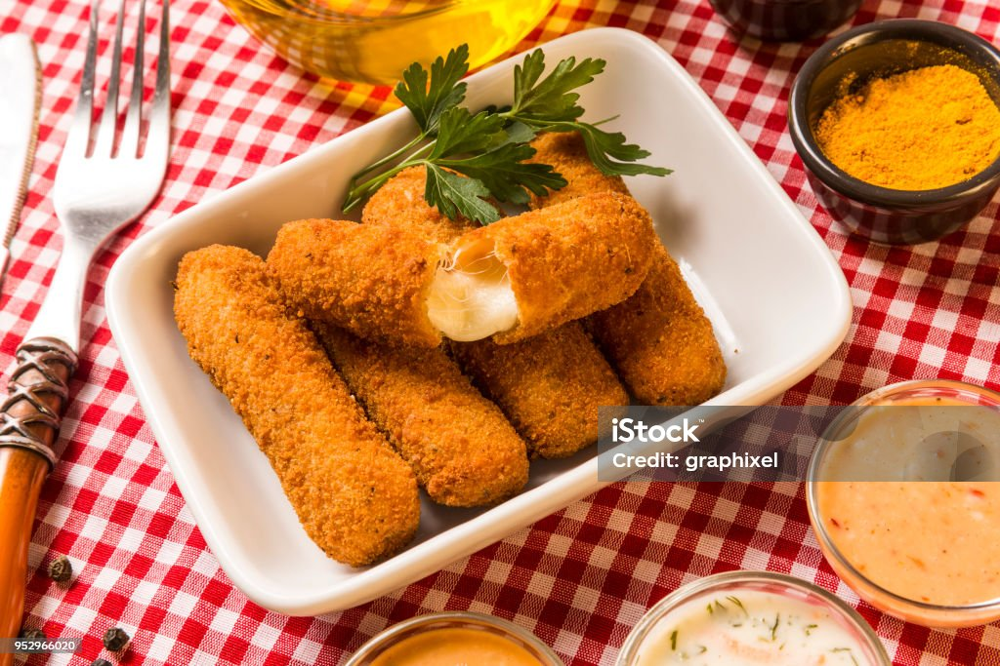

Bolinhos de Queijo com Geleia de Pimenta

Para bolinhos
- 250g de queijo muçarela ralado
- 100g de queijo parmesão ralado
- 1 xícara de farinha de trigo
- 2 ovos
- 1/2 xícara de leite
- 1 colher de chá de fermento em pó
- 1 colher de chá de sal
- Pimenta-do-reino a gosto
- Óleo para fritar
Para a geleia de pimenta:
- 1 xícara de geleia de pimenta
- 2 colheres de sopa de vinagre de maçã
Modo de Preparo:
-
Preparo da Geleia de Pimenta:
- Em uma panela, misture a geleia de pimenta com o vinagre de maçã.
- Leve ao fogo baixo, mexendo constantemente, até obter uma consistência mais espessa. Reserve.
-
Preparo dos Bolinhos:
- Em uma tigela grande, misture o queijo muçarela, o queijo parmesão, a farinha de trigo, os ovos, o leite, o fermento em pó, o sal e a pimenta-do-reino a gosto.
- Mexa bem até obter uma massa homogênea.
- Com as mãos levemente untadas, forme pequenos bolinhos e reserve.
-
Fritura dos Bolinhos:
- Em uma frigideira, aqueça o óleo em fogo médio.
- Frite os bolinhos até que fiquem dourados por todos os lados.
- Retire os bolinhos com uma escumadeira e coloque sobre papel toalha para absorver o excesso de óleo.
Finalização:
- Sirva os bolinhos quentes acompanhados da geleia de pimenta.
- Decore com folhas de salsa ou cebolinha, se desejar.
Aproveite seus deliciosos bolinhos de queijo com geleia de pimenta como aperitivo ou petisco em qualquer ocasião especial!